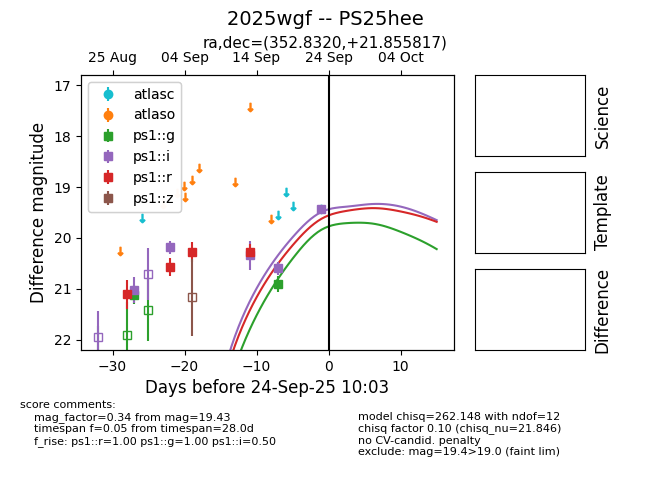
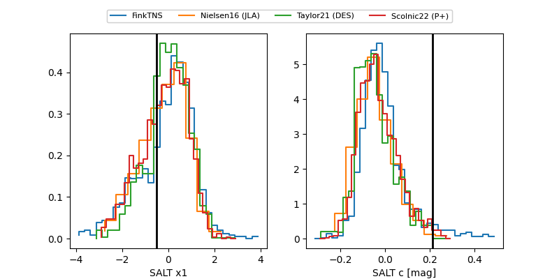

TNS: 2025wgf
YSE: 2025wgf
2025wgf (yse,tns)
PS25hee (panstarrs)
equatorial (ra, dec) = (352.8320,+21.85582)
galactic (l, b) = (99.3721,-37.32375)


last ps1::g=20.91, ps1::i=19.43, ps1::r=20.27
2 ps1::g, 5 ps1::i, 4 ps1::r detections